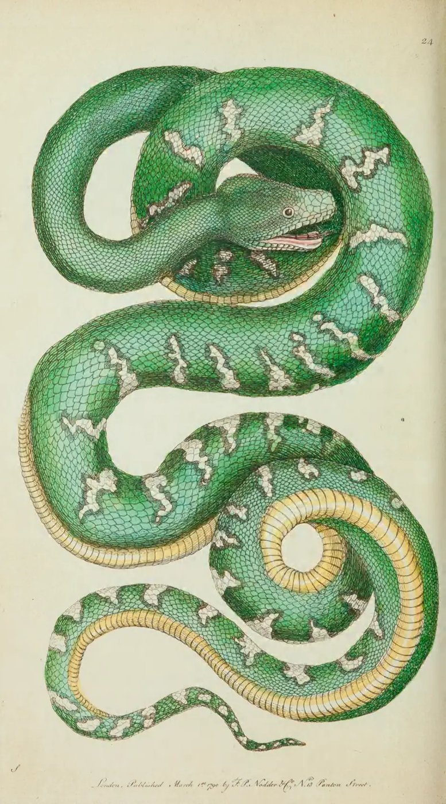

The Canine Boa (The Naturalist's Miscellany, Plate 24)
George Shaw & Frederick Polydore Nodder · 1789–90 · Hand-coloured engraving · Museums Victoria
Free to use
Shaw's text says this snake was copied from the figure in Albertus Seba's Thesaurus, which was so well drawn in pose and detail that it seemed better to copy it than to attempt a new one. A specimen was in the British Museum. Frederick Polydore Nodder engraved and published the plates; after his death his wife, Elizabeth, took over as publisher.